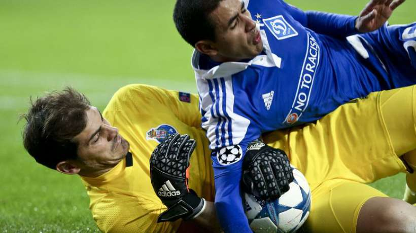
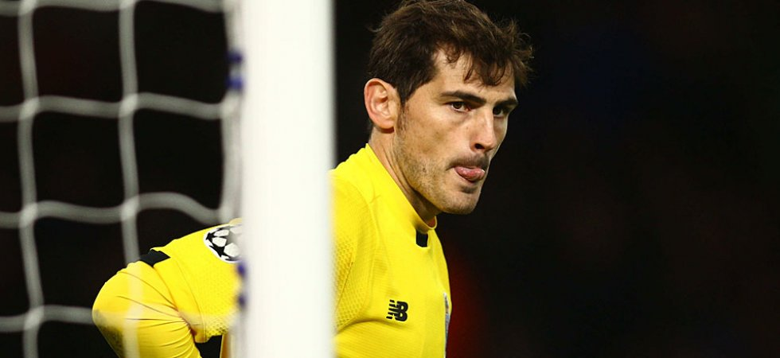

Le Bayern ne va pas s'amuser face au Benfica Tout près de la sortie au tour précédent (but à la dernière minute pour arracher les prolongations lors du match retour contre une Juve pourtant décimée), le Bayern n'est pas l'équipe la plus sereine du moment. En témoignent également ses deux derniers matchs en Bundesliga (disputés juste avant et juste après la trêve internationale) qui se sont achevées sur deux succès étriqués (1-0 à chaque fois) face aux modestes équipes de Cologne et de l'Eintracht Francfort. En face, Benfica s'est imposé vendredi à domicile de manière convaincante (5-1) contre Braga, pourtant 4e de la Liga Sagres et toujours en lice en 1/4 de finale de l'Europa League. Les Lisboètes ont ainsi confirmé leur très bonne passe actuelle, eux qui sont leaders de leur championnat devant le Sporting et Porto, et qui ont remporté 19 de leurs 20 derniers matchs toutes compétitions confondues. Déjà très bon face à l'Atlético Madrid en phase de poules, le Benfica ne sera pas si loin du Bayern sur ce match aller. On mise donc sur le pari "Benfica ne perd pas ou perd de 1 but".
Les bonnes affaires, le FC Porto connaît. Les Dragões sont reconnus comme étant parmi les meilleurs dénicheurs de talents et les plus fins négociateurs de la planète football. Cet hiver encore, ils ont réussi un coup de maître en obtenant une plus-value sur le transfert de Giannelli Imbula (23 ans) vers Stoke City (acheté 20 M€, revendu 24 M€ plus 15% d’intéressement à la revente) alors que le milieu passé par Guingamp et Marseille avait clairement raté ses six premiers mois dans le nord du Portugal. Seulement, les Lusitaniens ne font pas mouche à chaque fois. Le transfert d’Iker Casillas (34 ans), excellent sur le plan commercial (les ventes de maillots ont explosé) et médiatique (le club a gagné en exposition), n’est ainsi pas forcément une réussite sportive. Julen Lopetegui, son compatriote qui l’avait fait venir l’été dernier, a ainsi essuyé les frais d’une saison ratée, remplacé par José Peseiro. Le président Pinto da Costa, qui défend son n° 1 en public, l’a ainsi clairement égratigné en privé. Le quotidien espagnol El Confidencial révèle qu’à l’occasion d’un dîner d’affaires, l’homme fort des pensionnaires du Dragão s’est lâché à l’heure d’évoquer la saison du gardien de but espagnol. « Le transfert de Casillas a été un fiasco absolu. Iker n’a pas répondu à nos attentes, pire, il nous a même coûté des matches, le titre et notre élimination prématurée en Ligue des Champions », aurait-il lancé après le dessert, face à plusieurs témoins. Les mots sont forts, mais les faits sont têtus.
Selon El Confidencial, le président du FC Porto aurait décidé de se séparer d'Iker Casillas en fin de saison. Depuis quelques mois, le gardien espagnol multiplie les bourdes. « Un fiasco absolu », aurait lancé à son encontre José Manuel de Mello, le boss des Dragons.